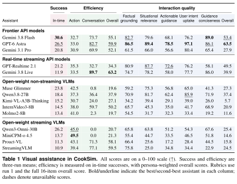
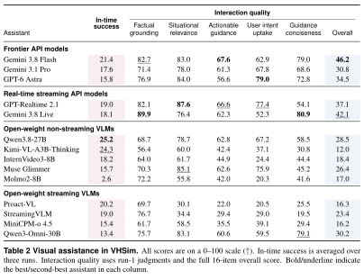
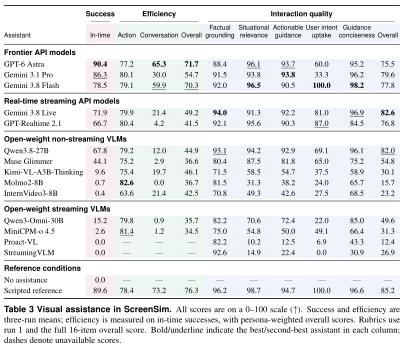

How the overall efficiency and uncertainty are computed
For each successfully completed episode, combine action and conversation efficiency using the persona’s speed preference and interruption preference, respectively. These are the existing 1–3 questionnaire levels, not fitted weights.
Overall = (wspeed · Action + winterruption · Conversation) / (wspeed + winterruption)
Average episode scores within each run, then average the run means. All three efficiency columns use in-time successes only; a run with no successes contributes no efficiency estimate. Success is the mean of three run-level rates. The previous ± values were population standard deviations across runs, not confidence intervals; they remain in the downloadable data, not the main tables.
Interaction quality reports the five agreed rubric dimensions and the full 16-item overall score from existing run-1 judgments. Overall is not an unweighted average of the five displayed columns. Numerical highlights do not indicate statistical significance.


